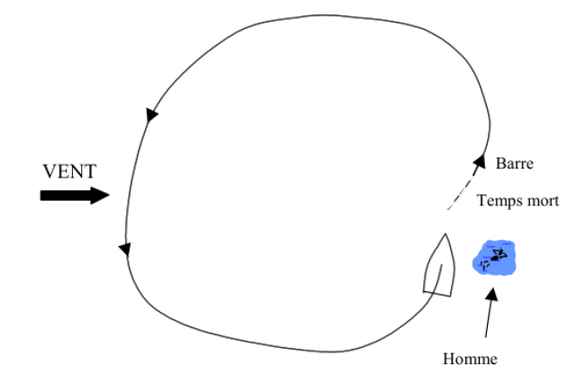
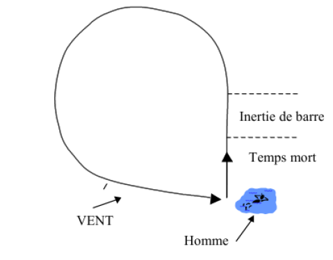
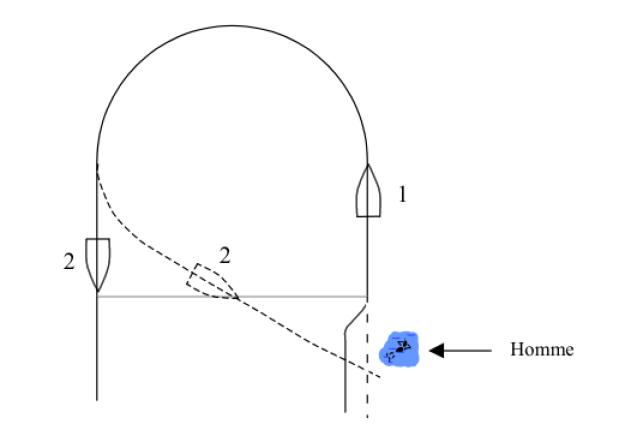

Faire le tour
Faire le tour (Anderson)
Cette manœuvre consiste en un tour complet éventuellement "adapté" afin de se rapprocher du naufragé tout en permettant la mise en œuvre des moyens de repêchage (embarcation ou moyens à partir du bord).
Elle est utilisée si l'on est sur de ne pas perdre l'homme de vue.
La vitesse peut être réduite dans un premier temps afin de ne pas trop s'éloigner.
La vitesse doit cependant être assez maintenue pour que le navire reste manœuvrant
Enfin, dans le cas de l'utilisation d'un canot de secours, il faut, lorsque les équipes sont parées à le mettre à l'eau, que le navire soit à une route adéquate par rapport au vent et aux vagues.

Dans la pratique, du fait du temps de réaction et de l'inertie de la barre, il faut généralement adapter la manœuvre.

Enfin, le risque étant de perdre l'homme de vue, il est conseillé de faire directement route sur lui, s'il n'y a pas besoin de mettre une embarcation à l'eau.
